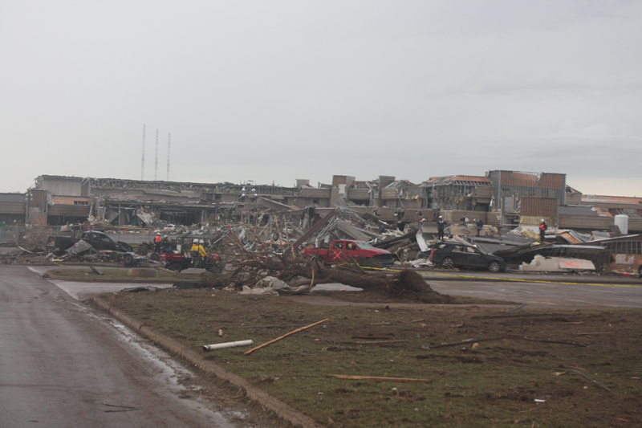
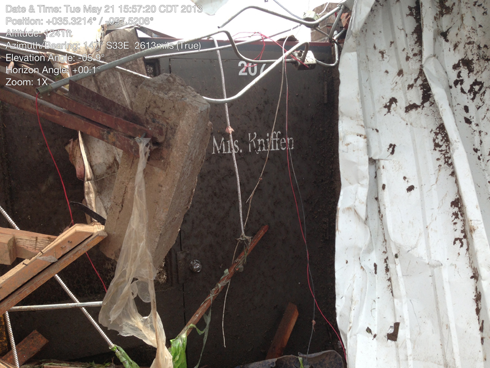

Newcastle and MooreMay 20, 2013
One tornado. Different records of what it did.
Follow the reported path, then read the warnings, schools and hospital in their own source contexts.
The tornado crossed from McClain County into Cleveland County, moving through Newcastle, southern Oklahoma City and Moore. The county records describe parts of one event. Its aftermath also left different kinds of evidence: damage assessments, emergency messages, interviews and photographs. Each answers a different question. Start with the two county records.
Moore Medical Center in the background

Doug Speheger / NWS Norman, May 21 survey. The original caption identifies a view looking ENE with Moore Medical Center in the background. The foreground damage and exterior view do not establish the condition of each hospital room or service. U.S. government photograph; original full frame and pixels retained, with embedded metadata removed.
Return to the medical center account · Open the complete publication copy · Original returned JPEG at NWS · Source, byte identity and processing record · Agency reuse policy.


This documentary account uses official source text, two retained county records and two agency survey photographs. The photographs show the following day's aftermath. Their captions and visible annotations retain their own limits. No registered camera, synchronized optical interval, historical wind field or continuous appearance reconstruction is published. Inspect the complete source dossier.
On this page
ONE EVENT, TWO COUNTY SEGMENTS
Crossing a county line did not start another tornado.
The retained McClain County record is NCEI event 451537. It reports an EF4 segment beginning at 1:56 p.m. Central Standard Time and ending at 2:04 p.m. Its continuation fields name Cleveland County. The Cleveland record, event 451572, begins at that same boundary time and position, then continues to 2:35 p.m. CST with a maximum rating of EF5.
The association rests on the explicit continuation, matching boundary and named narratives. Their shared weather episode supports that reading, but an episode can contain several tornadoes. The records remain separate so their county ratings, dimensions and impacts can still be inspected. Read the association and its limits.
The standard-time labels above are one hour earlier than the local daylight-time labels used elsewhere in the account. The complete reported interval is 2:56 to 3:35 p.m. CDT, equivalent to 19:56 to 20:35 UTC. Converting a stated zone preserves the source's reported minute. It does not establish an independently verified exposure clock.
Why the lengths and widths remain separate
McClain reports 1.85 miles and 1,280 yards. Cleveland reports 12 miles and 1,900 yards. NWS separately summarizes the whole track as approximately 14 miles. The county dimensions and rounded whole-track summary describe different scopes. They are not recomputed here into a new surveyed length. The maximum damage width is not the diameter of a visible funnel, and neither number supplies a wind-model setting. Inspect the reported dimensions.
THE WRITTEN DAMAGE PROGRESSION
From Newcastle through Moore.
The official account places the tornado's development in northwest Newcastle, south of State Highway 37 and east of Rockwell Avenue. It then follows the damage across the Canadian River near Interstate 44 and into more densely developed neighborhoods. The source describes a changing route through a community, not one uniform rating everywhere. NWS event account.
- Northwest Newcastle
The McClain County segment
The first county record describes EF4 damage after the Highway 37 crossing. Its reported beginning belongs to this segment, not the beginning of every storm in the outbreak.
- Canadian River and I-44
The county boundary
The record continues into Cleveland County. Matching endpoints establish the record association without drawing an invented straight-line surveyed path between them.
- Western Avenue to Santa Fe Avenue
Schools and residential neighborhoods
The continuing narrative describes Briarwood Elementary and then Plaza Towers Elementary amid widespread damage to surrounding homes. The later school-rating revision is kept beside the earlier account below.
- Telephone Road and I-35
A changing route through businesses and the hospital
The source describes a turn near Telephone Road before the tornado crossed I-35. Damage to Moore Medical Center became part of a separate facility reconnaissance.
- East of Bryant Avenue
The reported ending
The record follows less densely developed areas toward the ending east of Air Depot Boulevard. The ending label does not assign arrival times to every place passed earlier.
This progression is a source reading. It does not geocode each building, locate a camera, interpolate the tornado center or reconstruct its appearance. Inspect the continuing county source and its access limits.
On this pageISSUE TIME, VALIDITY AND REPORTED OBSERVATION
A clock label needs its own context.
The first warning and the later tornado-emergency message survive as identifiable NWS products in the Iowa Environmental Mesonet archive. NWS is the issuer. IEM preserves the text. The products' issue times are distinct from the observations described inside them and from their stated validity periods.
- 2:40 p.m. CDT / 19:40 UTC
The issued tornado warning
The warning includes Newcastle and Moore and states an ending of 3:15 p.m. CDT. Its text describes a storm capable of producing a tornado. Read the 19:40 UTC product.
- 2:56 p.m. CDT / 19:56 UTC
The reported tornado beginning
This is the beginning attributed to the Newcastle-Moore tornado in the retained county record. It is a reported event time, not the issue time of a warning.
- 3:01 p.m. CDT / 20:01 UTC
The tornado-emergency warning
The later product declares an emergency for Moore and south Oklahoma City, refers to an already tracked tornado, and states an ending of 3:45 p.m. CDT. Read the 20:01 UTC product.
These messages establish what was issued. They do not establish when every resident heard a warning, recognized a threat or reached shelter. A regional service assessment provides useful context about communication, but its multi-event performance figures must not be relabeled as measurements for this tornado alone. Read the assessment's scope.
Why 2:42:34 does not prove a two-minute delay.
NIST reports a first siren-computer label of 2:42:34 p.m. The same passage explains that the computer was not synchronized with the weather clock. Subtracting the 2:40 warning issue from that label would produce a precise-looking interval without establishing the actual delay. Keep the reported reading and its clock mismatch together. NIST, printed page 22 / PDF page 46 · Read the clock qualification.
BUILDINGS, PROCEDURES AND DIFFERENT OUTCOMES
Two schools belong to distinct accounts.
The source record reports seven children killed at Plaza Towers Elementary and no fatalities at Briarwood Elementary. Those outcomes matter in their own right. They do not make the two sites a controlled experiment. Exposure, construction, damage and the circumstances of sheltering cannot be held constant by placing two photographs side by side.
NIST's preliminary reconnaissance examined both schools and Moore Medical Center. Its scope included emergency operations and facility performance. That makes the report useful for reading how people used buildings during the event, while keeping its limited post-event scope visible. It does not turn an ordinary interior room into a certified shelter or establish a universal explanation from these three facilities. Read NIST's school chapters.
Plaza Towers: a refuge decision and a changing building.
Teachers interviewed by NIST described moving one group from the original main classroom building's hallway into nearby bathrooms and a closet as skylights began lifting. The account reports less fallen debris in those rooms than in the adjoining hallways. This is a later interview account of particular locations, not a synchronized record of every person's movement. NIST, printed page 29 / PDF page 53 · Read the attributed observation.
In the same original building, NIST documented roof-system loss and perimeter-wall collapse in the southwest wing. Other portions lost some roofing without collapsing. The report suggests that the remaining steel frame's redundancy, which did not rely only on the roof for lateral support, helped explain that difference. A teacher's account places roof loss before wall collapse. Keep that testimony, the observed damage and NIST's proposed explanation distinct. NIST, printed page 31 / PDF page 55 · Inspect the performance account and its limits.
Briarwood: the school contained different buildings.
NIST's teacher interviews describe students in Building 400 first sheltering in the main hallway, then moving into bathrooms as the tornado approached. Its survey records less structural damage in Building 400 than elsewhere on the campus, with perimeter walls essentially intact despite some roof loss. Damage to the roof and windows still caused substantial interior damage. Reported shelter change, printed page 36 / PDF page 60 · Building performance, printed page 38 / PDF page 62.
That account belongs to one building within a damaged campus. It does not establish a tested protective capacity for bathrooms or explain the different outcomes at the two schools by one cause. The following-day survey photograph below is not registered to Building 400 or to a particular shelter space. Read the building-specific observation.
What a single assumed capacity leaves out.
The Wind Lab compares generic calculated drag with one visitor-chosen capacity. These school accounts describe connected roofs and walls, changed support, debris and people moving within buildings. The lab does not model those processes or supply settings measured at either school. Read what the wind model can and cannot calculate, keeping this documentary as its reference. No school outcome here calibrates the experiment or certifies a shelter.
Keep Briarwood's rating revision visible.
The older NWS account and September 2013 Storm Data report describe an initial EF5 assessment at Briarwood. NIST's December 2013 school section also retains that initial interpretation. The current retained Cleveland narrative explicitly says further evaluation supported EF4 at the school. This changes the interpretation of one site while the tornado's whole-track maximum remains EF5. The records do not establish the date of that particular correction. Compare the source editions.
The following-day agency photograph of Briarwood supplies aftermath context. It is not an independent measurement of the wind speed or the EF rating.
Briarwood Elementary School after the tornado


Doug Speheger / NWS Norman. The original caption identifies Briarwood Elementary School. The full image includes a May 21 date and precise-looking clock, coordinate and bearing labels. These remain source annotations. Their accuracy and reference system have not been independently established here. U.S. government photograph; embedded metadata removed without changing the picture.
This is the next day's aftermath, not the tornado's appearance at this site. It does not independently determine a damage rating. Read why the school's reported rating changed.
Open the complete publication copy · Original returned JPEG at NWS · Source, byte identity and processing record · Agency reuse policy.

SURVIVING FRAME, LOST FUNCTION
The hospital's frame was only part of its performance.
NIST describes major damage to the medical center's envelope, with wind, rain and debris entering the building. A largely intact structural frame did not preserve hospital functionality. The facility was subsequently demolished. Read the medical center account, printed pages 44 to 49 / PDF pages 68 to 73.
This distinction helps connect visible damage to a building's use. A frame, its roof and walls, interior conditions and the ability to continue care are related but different questions. The agency survey photograph can show the exterior aftermath. It cannot establish which particular internal service failed, the full evacuation sequence or a unique local wind speed. Those questions require their own source evidence.
On this pageMAY 21, 2013 · THE FOLLOWING DAY
Two views from the agency damage survey.
NWS Norman identifies Doug Speheger, an NWS meteorologist, as the photographer for this survey group. The complete returned 800-pixel-wide versions appear beside the introduction and school account. Open the medical center view · Open the Briarwood view. Embedded metadata was removed from the publication copies. Their decoded pixels, full rectangles and visible source annotations are unchanged. They are aftermath observations with unregistered camera geometry.
These two agency survey items do not transfer permission to other contributors' work. The tornado photographs credited to Jenny Hamar and Gabe Garfield on the original event page remain original-source links. No complete film, third-party tornado photograph or unreviewed derivative is hosted by this account. Open the NWS event page and its item credits.
On this pageA RECORD CAN CHANGE WITHOUT ITS OLD EDITION DISAPPEARING
Read the revision beside the earlier account.
A source date and its scope help explain why two official records can differ. The September 2013 Storm Data report is a historical edition. The retained NCEI release used by Atlas was generated in March 2026. The maintained NWS event page still carries preliminary labels. None should silently borrow another edition's wording. Open the older report · Inspect the retained current record.
Briarwood provides a concrete example: keep the initial school rating and the later EF4 interpretation distinguishable. The revised county narrative is not a newly measured value produced by Atlas. Its correction date and complete engineering basis remain outside the inspected record.
Another unresolved classification difference
The preliminary NIST report describes a small earlier tornado west of Newcastle. The later official Storm Data report describes the preceding damage as thunderstorm wind. This difference does not justify extending the Newcastle-Moore track backward or adding another tornado to this dossier. The earlier account is preserved as a source question. Read the source difference and its limits.
THE PEOPLE BEHIND THE RECORDS
The reported loss belongs to one event.
The retained county fields report 24 direct deaths in Cleveland County and none in McClain County. They allocate five direct injuries to McClain and 207 to Cleveland. Both narratives refer to the same total of 212 injuries. Repeating a whole-event account in two source rows does not double the people affected. Inspect the separate county fields and reported allocation.
The school and hospital accounts describe particular places within this wider loss. No exact individual fatality locations or complete biographical memorial have been established by this increment. The source distinctions preserve the people and the scope of each count without inventing details about their lives.
On this pageDOCUMENTARY EVIDENCE AND HISTORICAL RECONSTRUCTION
What these sources leave open.
A written path, a damage rating and a later photograph can support a substantial account while leaving historical appearance unknown. The two survey pictures do not show the moving tornado. Their image coordinates and labels have not been turned into camera poses. No qualified optical interval, lens calibration or independent clock correspondence is admitted here.
The NWS page also links radar products and storm imagery. Their availability alone does not establish camera geometry, surface wind or the shape of the visible condensation. A reconstruction would need source-specific observations, allowed use, timing and viewpoint constraints, and uncertainty that can survive a comparison capable of rejecting the fit. Uncovered intervals remain unknown.
The related Joplin institutional account offers a separate case for reading emergency facilities and recovery. Comparisons can help frame a question, but evidence from Joplin or El Reno does not calibrate this event. Inspect the dossier's explicit reconstruction boundary.
On this pageORIGINAL SOURCES AND INSPECTION
Follow the account back to its records.
NWS Norman event account
The tornado outbreak of May 20, 2013. Maintained primary page. Summary, written progression, source directory, timeline and photo-group credits inspected October 19, 2026 UTC. Older interpretations and preliminary labels remain identified.
McClain County source record
NCEI event 451537. Retained March 23, 2026 CSV-derived record and original NCEI HTML inspected. County continuation, impacts and endpoints remain separate from the whole-track account.
Cleveland County source record
NCEI event 451572. Retained March 23, 2026 CSV-derived record inspected in full, including the school-rating revision. The fresh URL redirected to an access app whose narrative was unavailable to the research tool. Read the retained-source identity and access boundary.
The older monthly report
NWS Norman Storm Data, May 2013, county entries. Original PDF printed September 16, 2013. Relevant May 20 entries inspected as text. The edition is retained as written, including interpretations that differ from the later source record.
Issued warning products
19:40 UTC warning and 20:01 UTC tornado-emergency warning. Original NWS text preserved by IEM. Product headers, wording and validity periods read. Receipt by an individual person is not established.
NIST's limited reconnaissance
Kuligowski, Phan, Levitan and Jorgensen, NIST Special Publication 1164, December 3, 2013. Selected scope, clock and facility passages inspected as text. Agency authorship and separately credited figure rights remain distinct. No report figure is extracted into this article.
Communication across several events
NWS service assessment: May 2013 Oklahoma tornadoes and flash flooding. Selected scope, May 20 and communication portions read. The report covers several dates and hazards. Its aggregate findings are not measurements for every resident or for this tornado alone.
Survey photograph provenance and use
NWS Damage Photos introduction and exact item links identify the photographer and later survey date. The NWS use policy provides the agency-material basis and preserves separately credited exceptions. The two publication copies remove embedded metadata only, with complete source pixels retained. Their exact identities are recorded in the dossier.
Read the source and claim record · Open the complete dossier · Return to the historical collection.
On this page